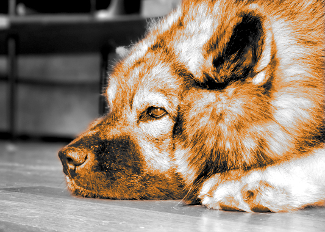
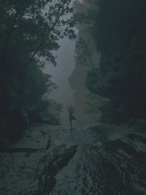

Bildredigering
Borttagning av objekt


Jag arbetade i GIMP och började med att ta bort fingret, huvudsakligen med hjälp av fuzzy select. Sedan använde jag clone-verktyget för att fylla i hålrummet och sist använde jag heal-verktyget för att fixa artefakter från kloningen. Sist lade jag på ett filter för att skifta färgen på himmlen, jag fick lite problem för när jag skalade ner bilden för att exportera ändrades inte arean som filtret påverkade.
Färgläggning av objekt


Jag arbetade i GIMP. Vid mitt första försök märkte jag först ut hundhuvudet och färglade det och skalade sedan om bilden till den storlek jag ville ha. Det var då jag påmindes om vad jag redan upptäckt, att arean som ett filter påverkar inte skalas om när bilden gör det. Vid mitt andra försök började jag med att skala om bilden till den storlek jag ville ha och märkte sedan ut hundhuvudet. Av okänd anledning kunde jag inte markera de översta c. 20 pixlarna, så de färglades inte och skars därför bort ur bilden.
Kontrast


Jag arbetade i GIMP och började med att skala om bilden till den storlek jag ville ha. Sedan sänkte jag kontrasten för jag ville få en lugnare känsla, den sänkta kontrasten gjorde att bilden blev "immig" så jag valde att sänka exponeringen. Sedan justerade jag nivåerna på dessa filter tills jag fick en bild jag var mer-eller-mindre nöjd med. Sist justerade jag färgtempraturen för att få tillbaka de blåa tonerna som jag ahde förlorat men villa ha.